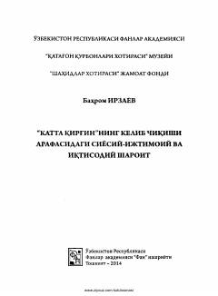

KQSovet davridagi qatag'on siyosati va uning kelib chiqish sabablari tahlil qilingan ilmiy risola.
Mazkur risola sovet imperiyasining O'zbekistonda amalga oshirgan qatag'on siyosati va uning kelib chiqish sabablariga bag'ishlangan. Unda ma'muriy-buyruqbozlik tuzumining qaror topishi hamda milliy siyosatdagi adolatsizliklar ilmiy asosda tahlil qilingan. Kitob tarixchilar, o'qituvchilar va keng kitobxonlar ommasiga mo'ljallangan.